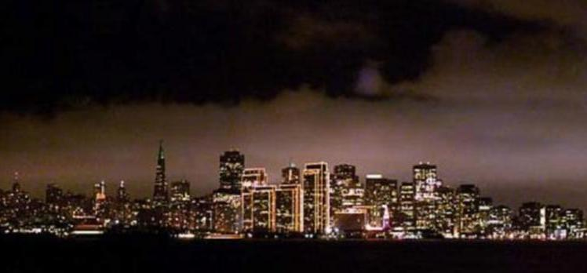

. . . the Sun, he remembered the Valley, he remembered the Hive.

In his childhood, the Sun had been the source of life, the reference beacon, the only food for him. It was a round siren shining with reddish brightness, screeching always from the same point in the sky the same litany of radio waves. In those distant times, he had believed the sound of the Sun was the sound of silence. He couldn't conceive the world without that background music of crickets.
The Valley lay just under the Sun, a tremendous cut in the Earth lit by its blood-coloured light, as if the Sun had lanced a huge wound on the ground. From the bottom of the Valley came a sound as deep as the Earth itself: the Earth-current, that underground energy that throbbed in the depths. The air of the Valley was corrosive even for the giants, but forests could live in it. For the giants, forests were sticky greenish masses of life in constant decay. The carbon-based life that made up forests had such an ephemeral duration compared with that of the giants, that they could rarely tell apart an individual tree. They only saw the vibrating mass of the forest as a whole.
